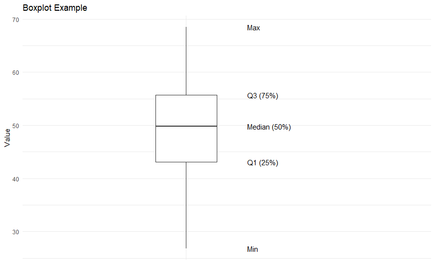
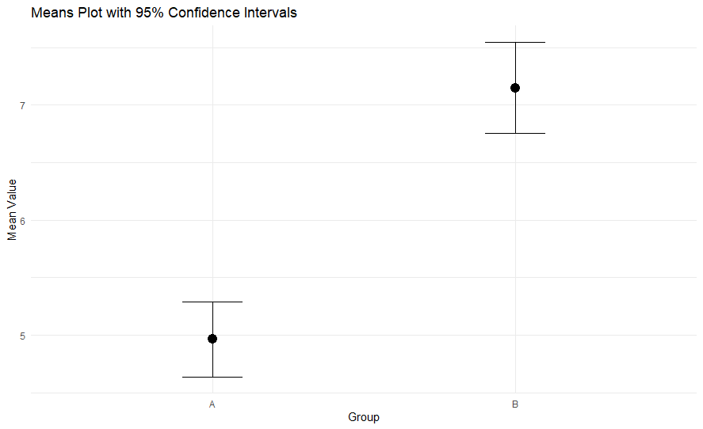
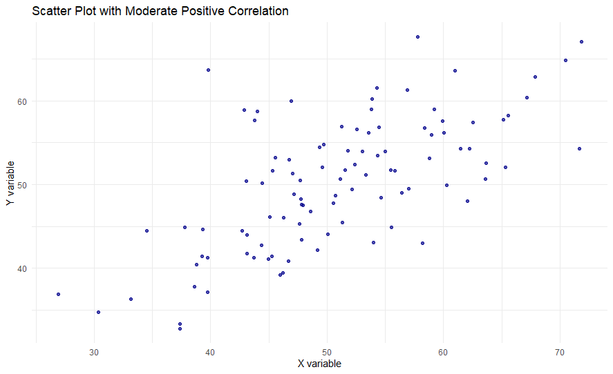

Statistics Glossary
Descriptive Statistics
Measures of Average
Mean
The mean is the average of a dataset. It is calculated by summing all the values and dividing by the number of values.
Median
The median is the middle value in a dataset when the values are arranged in order. If there is an even number of observations, the median is the average of the two middle numbers.
Mode
The mode is the value that appears most frequently in a dataset. A dataset can have one mode, multiple modes, or no mode.
Example Calculations for Measures of Average
Example Data: 12, 15, 15, 18, 20, 22, 25
Mean:
Sum = 12 + 15 + 15 + 18 + 20 + 22 + 25 = 127
Count = 7
Mean = 127 / 7 ≈ 18.14
Median:
Steps to find the Median:
1. Order the data from smallest to largest: 12, 15, 15, 18, 20, 22, 25
2. Since there are 7 data points (an odd number), the median is the middle value.
Position of Median = (n + 1) / 2 = (7 + 1) / 2 = 4th position.
3. The value at the 4th position is 18.
Median = 18
Mode:
Example Data: 12, 15, 15, 18, 20, 22, 25
The value 15 appears most frequently (twice).
Mode = 15
Measures of Dispersion
Range
The range is the difference between the highest and lowest values in a dataset.
Inter-Quartile Range (IQR)
The IQR is the range of the middle 50% of the data. It is calculated as the difference between the third quartile (Q3) and the first quartile (Q1).
Variance
Variance measures how far a set of numbers is spread out from their average value. It is the average of the squared differences from the Mean.
Standard Deviation
Standard deviation is a measure of the amount of variation or dispersion of a set of values. It is the square root of the variance.
Example Calculations for Measures of Dispersion
Example Data: 12, 15, 15, 18, 20, 22, 25
Mean = 18.14
Range:
Highest value = 25
Lowest value = 12
Range = 25 - 12 = 13
Inter-Quartile Range (IQR):
Steps to find Q1 and Q3:
1. Order the data: 12, 15, 15, 18, 20, 22, 25
2. Find the median (Q2) first: The median is 18.
3. Q1 is the median of the lower half of the data (excluding the overall median if n is odd):
Lower half: 12, 15, 15
Q1 = 15
4. Q3 is the median of the upper half of the data (excluding the overall median if n is odd):
Upper half: 20, 22, 25
Q3 = 22
IQR = Q3 - Q1 = 22 - 15 = 7
Variance:
Steps:
1. Find the difference from the mean for each data point and square it:
(12 - 18.14)² = (-6.14)² ≈ 37.70
(15 - 18.14)² = (-3.14)² ≈ 9.86
(15 - 18.14)² = (-3.14)² ≈ 9.86
(18 - 18.14)² = (-0.14)² ≈ 0.02
(20 - 18.14)² = (1.86)² ≈ 3.46
(22 - 18.14)² = (3.86)² ≈ 14.90
(25 - 18.14)² = (6.86)² ≈ 47.06
2. Sum these squared differences:
37.70 + 9.86 + 9.86 + 0.02 + 3.46 + 14.90 + 47.06 = 122.86
3. Divide by (Count - 1) for sample variance:
Variance = 122.86 / (7 - 1) = 122.86 / 6 ≈ 20.48
Standard Deviation:
Variance = 20.48 (from previous calculation)
Standard Deviation = √20.48 ≈ 4.525
Statistical Charts
Box Plot
A box plot (or box-and-whisker plot) is a standardised way of displaying the distribution of data based on a five-number summary:
- Minimum: The smallest value in the dataset.
- First Quartile (Q1): The 25th percentile, marking the end of the first quarter of the data.
- Median (Q2): The middle value of the dataset, also the 50th percentile.
- Third Quartile (Q3): The 75th percentile, marking the end of the third quarter of the data.
- Maximum: The largest value in the dataset.
It is particularly useful for:
- Visualising the spread, skewness, and potential outliers of a dataset.
- Comparing distributions between different groups or categories at a glance.

Mean Plot
A mean plot displays the mean (average) of a variable for different categories or groups. It typically includes error bars, which provide a visual representation of the variability or uncertainty around each mean.
- These error bars commonly represent the Standard Error of the Mean (SEM), indicating how much the sample mean is likely to vary from the true population mean. A smaller SEM suggests a more precise estimate of the population mean.
- They can also represent the Standard Deviation (SD), showing the typical amount of variation or dispersion of individual data points around the mean.
- Alternatively, error bars can represent a Confidence Interval (e.g., 95% CI), which provides a range within which the true population mean is likely to fall with a certain level of confidence.
Mean plots are useful for:
- Visualising averages across different groups.
- Assessing the statistical significance of differences between group means; if the error bars (especially confidence intervals) of two groups do not overlap, it often suggests a statistically significant difference.

Histogram
A histogram is a graphical representation of the distribution of numerical data. It uses bars to show the frequency of data points within specified intervals (bins). The height of each bar indicates the frequency or count of observations falling into that range.
Histograms are useful for understanding:
- The shape of a dataset (e.g., normal, skewed, bimodal).
- The centre and spread of the data.
- The presence of outliers or unusual patterns.
Skewness in Histograms:
- Normal Distribution: A perfectly symmetrical, bell-shaped distribution where the mean, median, and mode are approximately equal and located at the centre.
- Skewness: Describes the asymmetry of the distribution.
- Positive Skew (Right-skewed): The tail of the distribution extends to the right, meaning there are more extreme high values. The bulk of the data is on the left, and the mean is typically greater than the median.
- Negative Skew (Left-skewed): The tail of the distribution extends to the left, meaning there are more extreme low values. The bulk of the data is on the right, and the mean is typically less than the median.
Scatter Plot
A scatter plot (or scatter diagram) displays the relationship between two numerical variables. Each point on the plot represents an individual observation, with its position determined by its values on the two variables (one on the X-axis, one on the Y-axis).
Scatter plots are highly useful for:
- Identifying patterns and trends (e.g., linear, non-linear).
- Visualising the direction and strength of correlations (positive, negative, or no correlation).
- Detecting outliers that deviate from the general pattern.
